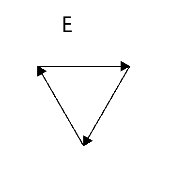
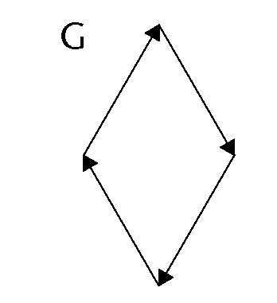
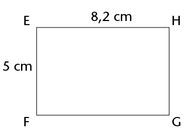

Omtrek en oppervlakte van
Jy sal uit Graad 6 onthou dat omtrek die afstand om die buitenste rand van iets is. Oppervlakte is die grootte van ’n plat oppervlak van iets. In hierdie hoofstuk gaan jy leer om verskillende formules te gebruik om die omtrek en oppervlakte van vierkante, reghoeke en driehoeke te bereken. Jy sal probleme oplos deur hierdie formules te gebruik en jy sal ook leer hoe om tussen verskillende oppervlakte-eenhede te herlei.
Omtrek van veelhoeke
Die omtrek van ’n figuur is die totale afstand rondom die figuur, of die lengtes van al sy sye bymekaargetel. Omtrek (P) word in eenhede soos millimeter (mm), sentimeter (cm) en meter (m) gemeet
Meting van omtrek
-
-
Gebruik ’n passer en/of ’n liniaal om die lengte van elke sy in figure A tot C te meet. Skryf die afmetings in mm langs die sye neer.
-
Skryf die omtrek van elke figuur neer.


-
-
Die volgende figure bestaan uit pyltjies wat ewe lank is.
-
Wat is die omtrek van elke figuur in getal pyltjies?
-
As elke pyltjie 30 mm lank is, wat is die omtrek van elke figuur in mm?




-
Formules vir omtrek
As die sye van ’n vierkant almal s eenhede lank is, dan is:
\[\begin{align} \textbf{Omtrek van vierkant } &= s+ s+s+s\\ &= 4 \times s\\ \text{of } P &= 4s\end{align}\]

As die lengte van ’n reghoek \(l\) eenhede is en die breedte (wydte) \(b\) eenhede is, dan is:
\[\begin{align} \textbf{Omtrek van reghoek } &= l+l+b+b\\ &=2\times l + 2 \times b\\ \text{of } P&=2(l+b) \end{align}\]

’n Driehoek het drie sye, dus:
\[\begin{align} \textbf{Omtrek van driehoek } &= s_1 + s_2 + s_3\\ \text{of } P &= s_1 + s_2 + s_3 \end{align}\]

Toepassing van omtrekformules
-
Bereken die omtrek van ’n vierkant as die lengte van een van sy sye 17,5 cm is.
-
Een sy van ’n gelyksydige driehoek is 32 cm. Bereken sy omtrek.
-
Bereken die lengte van een sy van ’n vierkant as die omtrek van die vierkant 7,2 m is. (Wenk: \(4s\ =\)? Daarom is \(s =\)?)
-
Twee sye van ’n driehoek is 2,5 cm elk. Bereken die lengte van die derde sy as die driehoek se omtrek 6,4 cm is.
-
’n Reghoek is 40 cm lank en 25 cm breed. Bereken sy omtrek.
-
Bereken die omtrek van ’n reghoek wat 2,4 m breed en 4 m lank is.
-
Die omtrek van ’n reghoek is 8,88 m. Hoe lank is die reghoek as dit 1,2 m breed is?
-
Doen die nodige berekeninge om die tabel te voltooi in jou oefeningboek. (Al die afmetings verwys na reghoeke.)
Lengte
Breedte
Omtrek
(a)
74 mm
30 mm
(b)
25 mm
90 mm
(c)
1,125 cm
6,25 cm
(d)
5,5 cm
22 cm
(e)
7,5 m
3,8 m
(f)
2,5 m
12 m
Oppervlakte en vierkante eenhede
Die oppervlakte van ’n figuur is die grootte van die plat vlak wat deur die rand (omtrek) van die figuur omgrens (ingesluit) word.
Oppervlakte (A) word gewoonlik in vierkante eenhede soos vierkante millimeter (mm2), vierkante sentimeter (cm2) en vierkante meter (m2) gemeet.
Vierkante eenhede om oppervlakte te meet
-
Skryf die oppervlaktes van figure A tot E hier onder neer deur die vierkante eenhede te tel. (Onthou om helftes of kleiner dele van vierkante by te tel.)

A ______ vierkante eenhede.
B ______ vierkante eenhede.
C ______ vierkante eenhede.
D ______vierkante eenhede.
E ______ vierkante eenhede.
-
Elke vierkant in die rooster hier onder is 1 cm2 (1 cm \(\times\) 1 cm).
-
Wat is die oppervlakte van die figuur wat op die rooster geteken is?
-
Teken jou eie twee figure op dieselfde rooster. Die figure moet dieselfde oppervlakte hê, maar verskillende omtrekke.

-
Herleiding van eenhede
Die figuur aan die regterkant wys ’n vierkant met sye van 1 cm. Die oppervlakte van die vierkant is een vierkante sentimeter (1 cm2).
Hoeveel vierkante van 1 mm by 1 mm (1 mm2) sal in die 1 cm2 vierkant inpas? ______ vierkant inpas: 1 cm2 = _______ mm2

Om cm2 na mm:2 te herlei (verander)
1 cm2= 1 cm \(\times\) 1 cm
= 10 mm \(\times\) 10 mm
= 100 mm2
te herlei (verander) mm2 na cm2 te herlei:
1 mm2 = 1 mm \(\times\) 1 mm
= 0,1 cm \(\times\) 0,1 cm
= 0,01 cm2
Ons kan dieselfde metode ook gebruik om tussen ander vierkante eenhede te herlei. Voltooi:
|
Van m2 na cm2: \[ \begin{align} 1 \text {m}^2 &= 1 \text{ m} \times 1 \text{ m} \\ &=\text{______ cm} \times \text{______ cm}\\ &=\text{______ cm}^2 \end{align}\] |
Van cm2 na m2: \[ \begin{align} 1 \text {cm}^2 &= 1 \text{ cm} \times 1 \text{ cm} \\ &=0.01 \text{ m} \times 0.01\text{ m}\\ &=\text{______ m}^2 \end{align}\] |
So, om tussen m2, cm2 en mm2 te herlei, doen jy die volgende:
- cm2 an mm2 \(\rightarrow\)vermenigvuldig met 100
- m2 an cm2 \(\rightarrow\) vermenigvuldig met 1000
- mm2 an cm2 \(\rightarrow\) vermenigvuldig met 100
- cm2 an m2 \(\rightarrow\) vermenigvuldig met 10000
Doen die nodige berekeninge in jou oefeningboek. Vul dan jou antwoorde in.
-
- 15 m2 = ______ cm2
- 5 cm2 = ______ mm2
- 20 cm2 = ______ m2
- 20 mm2 = ______ cm2
-
- 25 m2 = ______ cm2
- 240 000 cm2 = ______ m2
- 460,5 mm2 = _______ cm2
- 0,4 m2 = ______ cm2
- 12 100 cm2 = ______ m2
- 2,295 cm2 = ______ mm2
Oppervlakte van vierkante en reghoeke
Ondersoek die oppervlakte van vierkante en reghoeke
-
Elk van die volgende vier figure is in vierkante verdeel wat almal ewe groot is, naamlik 1 cm by 1 cm.
-
Gee die oppervlakte van elke figuur in vierkante sentimeter (cm2):
Oppervlakte van A:
Oppervlakte van B:
Oppervlakte van C:
Oppervlakte van D:
-
Is daar ’n korter metode om die oppervlakte van elke figuur uit te werk? Verduidelik.
-
-
Figuur BCDE is ’n reghoek en MNRS is ’n vierkant.

-
Hoeveel cm2 (1 cm \(\times\) 1 cm) sal in reghoek BCDE inpas?
-
Hoeveel mm2 (1 mm \(\times\) 1 mm) sal in reghoek BCDE inpas?
-
Wat is die oppervlakte van vierkant MNRS in cm2?
-
Wat is die oppervlakte van vierkant MNRS in mm2?
-
-
Figuur KLMN is ’n vierkant met sye van 1 m.

-
Hoeveel vierkante met sye van 1 cm sal langs die lengte van die vierkant inpas?
-
Hoeveel vierkante met sye van 1 cm sal langs die breedte van die vierkant inpas?
-
Hoeveel vierkante (cm2) sal dus in die hele vierkant inpas?
-
Voltooi: 1 m2 = ______ cm2
-
’n Vinnige manier om die getal vierkante te bereken wat in ’n reghoek sal inpas, is om die getal vierkante wat langs die lengte sal inpas te vermenigvuldig met die getal vierkante wat langs die breedte sal inpas.
Formules: oppervlakte van reghoeke en vierkante
In die reghoek aan die regterkant: \[ \begin{align} \text{Getal vierkante } &= \text{Vierkante langs die lengte } \times \text{Vierkante langs die breedte } \\ &= 6 \times 4 \\ &= 24 \end{align}\]
Hieruit kan ons die volgende aflei:
\[ \begin{align} \textbf{Oppervlakte van reghoek } &= \text{Lengte van reghoek } \times \text{Breedte van reghoek }\\ A &= l \times b\end{align}\] waar A die oppervlakte in vierkante eenhede, \(l\) die lengte en \(b\) die breedte is)
\[ \begin{align} \textbf{Oppervlakte van vierkant } &= \text{Lengte van sy } \times \text{Lengte van sy }\\ A &= l \times l \\ &=l^2 \end{align} \] waar \(A\) die oppervlakte in vierkante eenhede en \(l\) die lengte van ’n sy is)
Vir die berekeninge moet die waardes van die eenhede dieselfde wees. Onthou:
- 1 m = 100 cm en 1 cm = 10 mm
- 1 cm2 = 1 cm \(\times\) 1 cm = 10 mm \(\times\) 10 mm = 100 mm2
- 1 m2 = 1 m \(\times\) 1 m = 100 cm \(\times\) 100 cm = 10 000 cm2
- 1 mm2 = 1 mm \(\times\) 1 mm = 0,1 cm \(\times\) 0,1 cm = 0,01 cm2
- 1 cm2 = 1 cm \(\times\) 1 cm = 0,01 m \(\times\) 0,01 m = 0,0001 m2
Voorbeelde
-
Bereken die oppervlakte van ’n reghoek met ’n lengte van 50 mm en ’n breedte van 3 cm. Gee die antwoord in cm2.
Oplossing:
\[ \begin{align} \text{Oppervlakte van reghoek } & = l \times b & & &\\ &= (50 \times 30) \text{ mm}^2& \text{ of } A &= (5 \times 3)\text{ cm}^2\\ &= 1 500 \text{ mm}^2 & \text{ of } & = 15 \text{ cm}^2 \end{align} \] -
Bereken die oppervlakte van ’n vierkantige badkamerteël met ’n sy van 150 mm.
Oplossing: \[ \begin{align} \text{Oppervlakte van vierkantige teël } &= l \times l \\ &=(150 \times 150) \text{ mm}^2\\ &= 22500\text{ mm}^2\\ \end{align}\]
Die oppervlakte is dus 22 500 mm2 (or 225 cm2).
-
Bereken die lengte van ’n reghoek as sy oppervlakte 450 cm2 en sy breedte 150 mm is.
Oplossing: \[ \begin{align} \text{Oppervlakte van reghoek } & = l \times b & & &\\ 450 &= l \times 15 & & &\\ 30 \times 15 &= l \times 15 & \text{ of } 450 \div 15& = l\\ 30 = l & & 30 &= l\\ \end{align} \]
Die lengte is dus 30 cm (of 300 mm).
Toepassing van die formules
-
Bereken die oppervlakte van elk van die volgende figure:
-
’n reghoek met sye van 12 cm en 9 cm
-
’n vierkant met sye van 110 mm (antwoord in cm2)
-
’n reghoek met sye van 2,5 cm en 105 mm (antwoord in mm2)
-
’n reghoek met ’n lengte van 8 cm en ’n omtrek van 24 cm
-
-
’n Rugbyveld het ’n lengte van 100 m (doelpaal tot doelpaal) en ’n breedte van 69 m.
-
Wat is die oppervlakte van die veld (sonder die oppervlakte agter die doelpale)?
-
Wat sal dit kos om nuwe gras op daardie oppervlakte te plant teen R45/m2?
-
Nog ’n eenheid om oppervlakte te meet is hektaar (ha). Dit word hoofsaaklik gebruik om grond te meet. Die grootte van 1 ha is gelyk aan \( 100 \text{m} \times 100 \text{m}\). Is ’n rugbyveld groter of kleiner as 1 ha? Verduidelik jou antwoord.
-
-
Doen die nodige berekeninge om die tabel te voltooi in jou oefeningboek. (Al die afmetings verwys na reghoeke.)
Lengte
Breedte
Oppervlakte
(a)
m
8 m
120 m2
(b)
120 mm
mm
60 cm2
(c)
3,5 m
4,3 m
m2
(d)
2,3 cm
cm
2,76 cm2
(e)
5,2 m
460 cm
m2
-
Figuur A is ’n vierkant met sye van 20 mm. Dit is opgesny soos in A gewys en die dele is weer saamgevoeg om figuur B te vorm. Bereken die oppervlakte van figuur B.

-
Margie plant ’n groentebedding van 12 m \(\times\) 8 m.

-
Wat is die oppervlakte van die bedding?
-
Sy plant die helfte van die bedding vol wortels en een kwart vol tamaties en die ander kwart vol aartappels. Bereken die oppervlakte wat deur elke soort groente bedek word?
-
Hoeveel sal dit kos om die bedding te omhein? Die heining kos R38/m.
-
-
Meneer Allie moet ’n kombuisvloer van 5 m \(\times\) 4 m teël. Die blou teëls wat hy gebruik is elkeen 40 cm \(\times\) 20 cm.

-
Hoeveel teëls het meneer Allie nodig?
-
Die teëls word in bokse van 20 teëls verkoop. Hoeveel bokse moet hy koop?
-
Verdubbeling van ’n sy en die effek op oppervlakte on area
As ’n sy van ’n vierkant verdubbel, sal die oppervlakte van die vierkant ook verdubbel?
Die grootte van elke vierkant in die rooster hier onder is 1 cm \(\times\) 1 cm.
-
-
Merk die lengte van die sye van elke vierkant wat op die rooster geteken is.
-
Skryf die oppervlakte van elke vierkant neer. (Skryf die antwoord binne-in die vierkant.)
-
-
Let op dat die tweede vierkant in elke paar vierkante ’n sylengte het wat dubbel die sylengte van die eerste vierkant is.
-
Vergelyk die oppervlaktes van die vierkante in elke paar. Voltooi dan die volgende: Wanneer die sy van ’n vierkant verdubbel word, word die oppervlakte

Oppervlakte van driehoeke
Hoogtes en basisse van ’n driehoek
Die hoogte (h)van ’n driehoek is ’n loodregte lynstuk wat van ’n hoekpunt na die teenoorstaande sy getrek word. Die teenoorstaande sy vorm ’n regte hoek met die hoogte en word die basis (b) van die driehoek genoem. Enige driehoek het drie hoogtes en drie basisse.
In ’n reghoekige driehoek is twee sye reeds loodreg op mekaar:
’n Basis moet soms verleng word tot buite die driehoek om die loodregte hoogte te kan teken. Dit word in die eerste en derde driehoeke hier onder gewys. Let op dat die verlengde deel nie deel van die basis se afmeting is nie:
-
Trek enige hoogte in elk van die volgende driehoeke. Merk die hoogte (h)en basis (b) op elke driehoek.
-
Merk nog ’n stel hoogtes en basisse op elke driehoek.

Formule: oppervlakte van ’n driehoek
ABCD is ’n reghoek met lengte = 5 cm en breedte = 3 cm. Wanneer A en C verbind word, word twee driehoeke gevorm wat dieselfde oppervlakte het \(\triangle\)ABC en \(\triangle\)ADC.
\(\text{Oppervlakte van reghoek } = l \times b\)
\[ \begin{align} \text{Oppervlakte van } \triangle ABC \text{(of} \triangle ADC\text{)} &= \frac{1}{2} \text{(Oppervlakte van reghoek)}\\ &= \frac{1}{2}(l \times b) \end{align} \]
In reghoek ABCD is AD die lengte en CD is die breedte.
Maar kyk na \(\triangle\)ADC. Kan jy sien dat AD ’n basis is en CD sy hoogte?
So in plaas daarvan om te sê:
Oppervlakte van \(\triangle\)ADC of enige ander driehoek \(= \frac{1}{2}(l \times b)\)
sê ons:
In die formule vir die oppervlakte van ’n driehoek, beteken, b “basis” en nie “breedte” nie en h beteken loodregte hoogte.
Toepassing van die formule vir oppervlakte
-
Gebruik die formule om die oppervlaktes van die volgende driehoeke te bereken: \(\triangle\)ABC, \(\triangle\)EFG, \(\triangle\)JKL en \(\triangle\)MNP.


-
In elk van die figure hier onder is PQST ’n reghoek. Bereken by elke figuur die oppervlakte van \(\triangle\)PQR.

-
R is die middelpunt van QS.

-
Die oppervlakte van \(\triangle\)ABC, is 42 m2, en die loodregte hoogte is 16 m. Bepaal die lengte van die basis.
-
Bereken die omtrek (P) en oppervlakte (A) van die volgende figure:
P =________
A =________

P =________
A=________
P =________
A =________
-
Figuur ABCD is ’n reghoek: AB = 3 cm, AD = 9 cm en TC = 4 cm.
-
Bereken die omtrek van ABCD.
-
Bereken die oppervlakte van ABCD.
-
Bereken die oppervlakte van \(\triangle\)DTC.
Bereken die oppervlakte van ABTD.
-